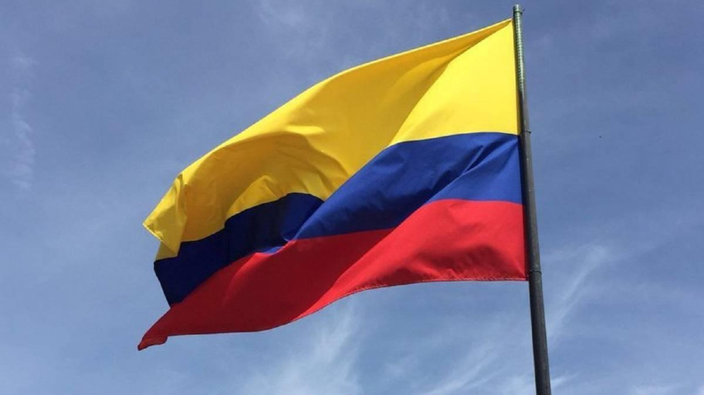

Visitar nuevos lugares, conocer diferentes culturas, experimentar diversos momento.Estas son algunas de las razones por las que viajar es bueno. De hecho, salir de nuestro entorno por un tiempo siempre aporta beneficios, viajar abre nuestra mente y nuestra perspectiva hacia el mundo.Los motivos son incalculables porque dependen de cada persona. Se viaja para romper con la rutina, para tomar distancia de lo cotidiano, para conocer y experimentar de primera mano nuevas culturas, para ver ese templo o monumento que tanto te ha hecho suspirar al admirarlo en fotos.Viajar por el mundo es posible para cualquier persona sin importar su situación actual, pero solo si realmente te lo propones y tienes la determinación de llevarlo acabo.
Acontinuacion conoceras unos cuantos de muchos lugares hermosos a ls cual no te arrepentiras de ir a conocer:
COLOMBIA

Colombia es un país del extremo norte de Sudamérica. Su paisaje cuenta con bosques tropicales, las montañas de los Andes y varias plantaciones de café. En Bogotá, su capital a gran altura, el distrito Zona Rosa es famoso por sus restaurantes y tiendas. Cartagena, en la costa del Caribe, tiene una Ciudad Antigua colonial amurallada, un castillo del siglo XVI y arrecifes de coral cercanos. algunos de sus lugares turisticos son:
Ecuador es un país que se extiende por el ecuador en la costa oeste de Sudamérica. Sus diversos paisajes abarcan la selva del Amazonas, las zonas altas andinas y las islas Galápagos de abundante fauna. En las laderas de los Andes, a una elevación de 2,850 m, Quito, su capital, es famosa por su centro colonial español que se ha conservado intacto por mucho tiempo, con palacios decorados del siglo XVI y XVII y sitios religiosos, como la ornamentada Iglesia de la Compañía de Jesús. Algunos de sus lugares turisticosa son :
Venezuela es un país de la costa norte de América del Sur, con diversas atracciones naturales. A lo largo de su costa en el Caribe, hay islas turísticas tropicales, entre ellas la Isla de Margarita y el archipiélago Los Roques. Al noroeste está la cordillera de los Andes y la ciudad colonial de Mérida, una base para visitar el Parque Nacional de la Sierra Nevada. Caracas, la capital, se encuentra en el norte.Venezuela es un país especialmente interesante para el desarrollo del ecoturismo o el turismo de aventura, y sus principales destinos son el Parque Nacional Canaima, la Región de Los Llanos (que tiene áreas de exuberante biodiversidad), el estado Amazonas, y la deshabitada isla La Tortuga, entre otros:
Brasil es un vasto país de Sudamérica que se extiende desde la Cuenca del Amazonas en el norte hasta los viñedos y las enormes cataratas del Iguazú en el sur. Río de Janeiro, simbolizado por su estatua de 38 m del Cristo Redentor sobre el cerro del Corcovado, es famoso por sus ajetreadas playas Copacabana e Ipanema, junto con su enorme y estridente festival del Carnaval, que cuenta con carros alegóricos, exuberantes disfraces y danza y música samba.
Perú es un país de Sudamérica que abarca una sección del bosque del Amazonas y Machu Picchu, una antigua ciudad inca en las alturas de los Andes. La región en torno a Machu Picchu, incluido el Valle Sagrado, el Camino del Inca y la ciudad colonial de Cuzco, es rica en sitios arqueológicos. En la costa árida del Pacífico de Perú se encuentra Lima, la capital, con un centro colonial preservado e importantes colecciones de arte precolombino.
En el sur de Perú, el extenso lago Titicaca (compartido con Bolivia) tiene aguas de color zafiro y festivales folclóricos en la altura. La ciudad de Arequipa es popular para la recreación al aire libre, como escalar volcanes y ver cóndores andinos en el Valle del Colca. El Valle Sagrado (Urubamba) ofrece muchas alternativas de senderismo, descenso de ríos y ciclismo de montaña. En el desierto del sur, los visitantes toman vuelos en avión para llegar a las Líneas de Nazca, pictogramas enormes y antiguos. En el noreste, Iquitos es la vía de acceso a la cuenca del Amazonas en Perú.